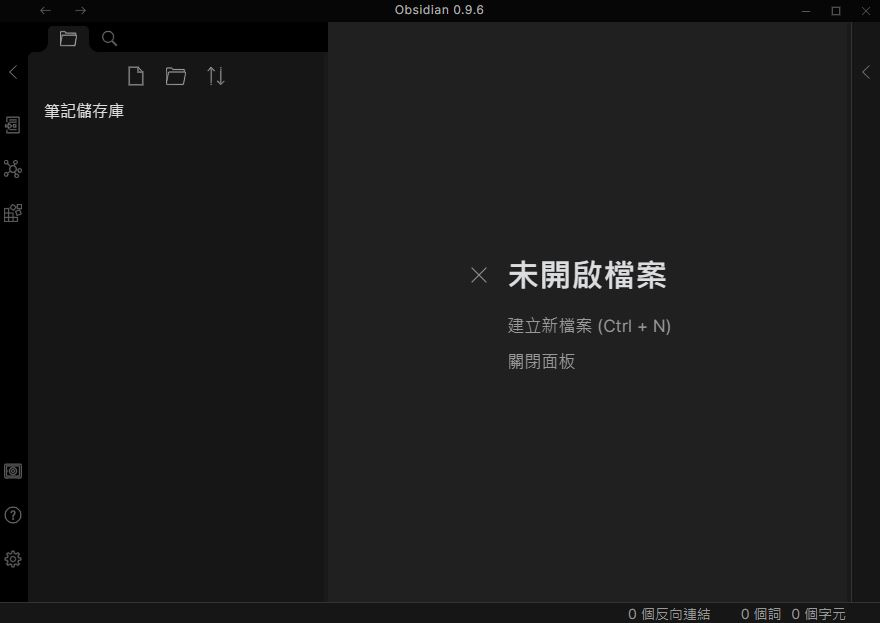
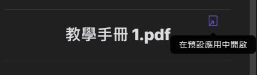

<!DOCTYPE html>
<html>
<head>
  <meta charset="utf-8">
  
  <title>Obsidian 筆記整理 | 前端筆記</title>
  <meta name="viewport" content="width=device-width, initial-scale=1, maximum-scale=1">
  
  <meta name="keywords" content="w3HexSchool" />
  
  
  
  
  <meta name="description" content="關於 Obsidian 筆記工具 Obsidian">
<meta property="og:type" content="article">
<meta property="og:title" content="Obsidian 筆記整理">
<meta property="og:url" content="https://orandigo.github.io/2020/10/30/20201030-tool-obsidian/index.html">
<meta property="og:site_name" content="前端筆記">
<meta property="og:description" content="關於 Obsidian 筆記工具 Obsidian">
<meta property="og:locale" content="zh_TW">
<meta property="og:image" content="https://orandigo.github.io/2020/10/30/20201030-tool-obsidian/obsidian01.JPG">
<meta property="og:image" content="https://orandigo.github.io/2020/10/30/20201030-tool-obsidian/obsidian02.JPG">
<meta property="og:image" content="https://orandigo.github.io/2020/10/30/20201030-tool-obsidian/obsidian03.JPG">
<meta property="og:image" content="https://orandigo.github.io/2020/10/30/20201030-tool-obsidian/obsidian04.JPG">
<meta property="og:image" content="https://orandigo.github.io/2020/10/30/20201030-tool-obsidian/obsidian07.JPG">
<meta property="og:image" content="https://orandigo.github.io/2020/10/30/20201030-tool-obsidian/obsidian05.JPG">
<meta property="og:image" content="https://orandigo.github.io/2020/10/30/20201030-tool-obsidian/obsidian06.JPG">
<meta property="og:image" content="https://orandigo.github.io/2020/10/30/20201030-tool-obsidian/obsidian25.JPG">
<meta property="og:image" content="https://orandigo.github.io/2020/10/30/20201030-tool-obsidian/obsidian25.JPG">
<meta property="og:image" content="https://orandigo.github.io/2020/10/30/20201030-tool-obsidian/obsidian25.JPG">
<meta property="og:image" content="https://orandigo.github.io/2020/10/30/20201030-tool-obsidian/obsidian08.JPG">
<meta property="og:image" content="https://orandigo.github.io/2020/10/30/20201030-tool-obsidian/obsidian09.JPG">
<meta property="og:image" content="https://orandigo.github.io/2020/10/30/20201030-tool-obsidian/obsidian10.JPG">
<meta property="og:image" content="https://orandigo.github.io/2020/10/30/20201030-tool-obsidian/obsidian11.JPG">
<meta property="og:image" content="https://orandigo.github.io/2020/10/30/20201030-tool-obsidian/obsidian14.JPG">
<meta property="og:image" content="https://orandigo.github.io/2020/10/30/20201030-tool-obsidian/obsidian15.JPG">
<meta property="og:image" content="https://orandigo.github.io/2020/10/30/20201030-tool-obsidian/obsidian17.JPG">
<meta property="og:image" content="https://orandigo.github.io/2020/10/30/20201030-tool-obsidian/obsidian12.JPG">
<meta property="og:image" content="https://orandigo.github.io/2020/10/30/20201030-tool-obsidian/obsidian13.JPG">
<meta property="og:image" content="https://orandigo.github.io/2020/10/30/20201030-tool-obsidian/obsidian17.JPG">
<meta property="og:image" content="https://orandigo.github.io/2020/10/30/20201030-tool-obsidian/obsidian18.JPG">
<meta property="og:image" content="https://orandigo.github.io/2020/10/30/20201030-tool-obsidian/obsidian19.JPG">
<meta property="og:image" content="https://orandigo.github.io/2020/10/30/20201030-tool-obsidian/obsidian20.JPG">
<meta property="og:image" content="https://orandigo.github.io/2020/10/30/20201030-tool-obsidian/obsidian21.JPG">
<meta property="og:image" content="https://orandigo.github.io/2020/10/30/20201030-tool-obsidian/obsidian16.JPG">
<meta property="og:image" content="https://orandigo.github.io/2020/10/30/20201030-tool-obsidian/obsidian22.JPG">
<meta property="og:image" content="https://orandigo.github.io/2020/10/30/20201030-tool-obsidian/obsidian18.JPG">
<meta property="og:image" content="https://orandigo.github.io/2020/10/30/20201030-tool-obsidian/obsidian24.JPG">
<meta property="og:image" content="https://orandigo.github.io/2020/10/30/20201030-tool-obsidian/obsidian23.JPG">
<meta property="article:published_time" content="2020-10-30T10:12:16.000Z">
<meta property="article:modified_time" content="2020-12-05T18:37:54.479Z">
<meta property="article:author" content="Orange">
<meta property="article:tag" content="w3HexSchool">
<meta name="twitter:card" content="summary">
<meta name="twitter:image" content="https://orandigo.github.io/2020/10/30/20201030-tool-obsidian/obsidian01.JPG">
  
  <link rel="icon" href="/blog/css/images/favicon.ico">
  
    <link href="//fonts.googleapis.com/css?family=Source+Code+Pro" rel="stylesheet" type="text/css">
  
  <link href="https://fonts.googleapis.com/css?family=Open+Sans|Montserrat:700" rel="stylesheet" type="text/css">
  <link href="https://fonts.googleapis.com/css?family=Roboto:400,300,300italic,400italic" rel="stylesheet" type="text/css">
  <link href="//cdn.bootcss.com/font-awesome/4.6.3/css/font-awesome.min.css" rel="stylesheet">
  <style type="text/css">
    @font-face{font-family:futura-pt;src:url(https://use.typekit.net/af/9749f0/00000000000000000001008f/27/l?subset_id=2&fvd=n5) format("woff2");font-weight:500;font-style:normal;}
    @font-face{font-family:futura-pt;src:url(https://use.typekit.net/af/90cf9f/000000000000000000010091/27/l?subset_id=2&fvd=n7) format("woff2");font-weight:500;font-style:normal;}
    @font-face{font-family:futura-pt;src:url(https://use.typekit.net/af/8a5494/000000000000000000013365/27/l?subset_id=2&fvd=n4) format("woff2");font-weight:lighter;font-style:normal;}
    @font-face{font-family:futura-pt;src:url(https://use.typekit.net/af/d337d8/000000000000000000010095/27/l?subset_id=2&fvd=i4) format("woff2");font-weight:400;font-style:italic;}</style>
    
  <link rel="stylesheet" id="athemes-headings-fonts-css" href="//fonts.googleapis.com/css?family=Yanone+Kaffeesatz%3A200%2C300%2C400%2C700&amp;ver=4.6.1" type="text/css" media="all">

  <link rel="stylesheet" id="athemes-headings-fonts-css" href="//fonts.googleapis.com/css?family=Oswald%3A300%2C400%2C700&amp;ver=4.6.1" type="text/css" media="all">
  
<link rel="stylesheet" href="/blog/css/style.css">


  
<script src="/blog/js/jquery-3.1.1.min.js"></script>


  <!-- Bootstrap core CSS -->
  <link rel="stylesheet" href="/blog/css/bootstrap.css" >
  <link rel="stylesheet" href="/blog/css/fashion.css" >
  <link rel="stylesheet" href="/blog/css/glyphs.css" >

<meta name="generator" content="Hexo 4.2.0"></head>


  <body data-spy="scroll" data-target="#toc" data-offset="50">


  


<header id="allheader" class="site-header" role="banner" 
   >
  <div class="clearfix container">
      <div class="site-branding">

          <h1 class="site-title">
            
              <a href="/blog/" title="前端筆記" rel="home"> 前端筆記 </a>
            
          </h1>
          
          
            
          <nav id="main-navigation" class="main-navigation" role="navigation">
            <a class="nav-open">Menu</a>
            <a class="nav-close">Close</a>

            <div class="clearfix sf-menu">
              <ul id="main-nav" class="menu sf-js-enabled sf-arrows"  style="touch-action: pan-y;">
                    
                      <li class="menu-item menu-item-type-custom menu-item-object-custom menu-item-home menu-item-1663"> <a class="" href="/blog/">首頁</a> </li>
                    
                      <li class="menu-item menu-item-type-custom menu-item-object-custom menu-item-home menu-item-1663"> <a class="" href="/blog/archives">目錄</a> </li>
                    
                      <li class="menu-item menu-item-type-custom menu-item-object-custom menu-item-home menu-item-1663"> <a class="" href="/blog/about">關於</a> </li>
                    
              </ul>
            </div>
          </nav>

      </div>
  </div>
</header>


  <div id="container">
    <div id="wrap">
            
      <div id="content" class="outer">
        
          <section id="main" style="float:none;"><article id="post-20201030-tool-obsidian" style="width: 66%; float:left;" class="article article-type-post" itemscope itemprop="blogPost" >
  <div id="articleInner" class="clearfix post-1016 post type-post status-publish format-standard has-post-thumbnail hentry category-template-2 category-uncategorized tag-codex tag-edge-case tag-featured-image tag-image tag-template">
    
    
      <header class="article-header">
        
  
    <h1 class="thumb" class="article-title" itemprop="name">
      Obsidian 筆記整理
    </h1>
  

      </header>
    
    <div class="article-meta">
      
	<a href="/blog/2020/10/30/20201030-tool-obsidian/" class="article-date">
	  <time datetime="2020-10-30T10:12:16.000Z" itemprop="datePublished">十月 30, 2020</time>
	</a>

       
      
    </div>
    <div class="article-entry" itemprop="articleBody">
      
        <h1 id="關於-Obsidian"><a href="#關於-Obsidian" class="headerlink" title="關於 Obsidian"></a>關於 Obsidian</h1><ul>
<li><p>筆記工具 <a href="https://obsidian.md/" target="_blank" rel="noopener">Obsidian</a></p>
<a id="more"></a></li>
<li><p>免費單機軟體、付費連線功能</p>
<ul>
<li>免費只提供個人單機，所以也不需註冊就可使用<ul>
<li>付費並註冊帳號，付費服務有可以加入開發的社群、提早獲得內部的訊息、作商業用途和多台電腦的資料同步、文件上傳發布的功能。</li>
</ul>
</li>
</ul>
</li>
<li><p>編寫格式</p>
<ul>
<li>Markdown 格式保存</li>
</ul>
</li>
<li><p>雙向連結功能</p>
<ul>
<li>這功能會建立關鍵字卡片，並且產生和這關鍵字卡片關連的其他索引內容，更方便快速瀏覽</li>
</ul>
</li>
<li><p>可用外掛擴充功能，例如錄音功能、簡報功能等</p>
</li>
<li><p>筆記應用的方法</p>
<ul>
<li>Zettelkasten 卡片盒筆記法</li>
</ul>
</li>
<li><p><a href="https://publish.obsidian.md/help/Index" target="_blank" rel="noopener">Obsidian’s official help </a></p>
</li>
</ul>
<h1 id="安裝使用"><a href="#安裝使用" class="headerlink" title="安裝使用"></a>安裝使用</h1><p>先到官網 <a href="https://obsidian.md/" target="_blank" rel="noopener">https://obsidian.md/</a> 下載</p>
<p></p>
<p>點 2 下安裝，因為沒有需要勾選的項目，所以很快就安裝好了，接著開啟 Obsidian</p>
<p></p>
<p>看不懂沒關係，可以到最下方的語言選擇切換成繁體中文</p>
<p></p>
<p>就可以看到選單界面是繁體中文</p>
<p></p>
<p>當你已經有儲存庫的資料夾時，就只要選 <strong>開啟資料夾為儲存庫</strong> 連接就會看到全部的資料。</p>
<p>如果沒有就 <strong>建立新的儲存庫</strong> 就可以開始使用了。</p>
<p></p>
<p>左邊的工具列</p>
<ul>
<li>收起 - 把資料夾的目錄縮小</li>
<li>開啟快速切換 - 曾開啟過的文件紀錄</li>
<li>查看關聯圖</li>
<li>開啟 Markdown 格式轉換器 - 在變更格式時，<strong>會同時修改資料夾內的全部檔案格式</strong> </li>
<li>開啟其他儲存庫 - 選擇其他資料夾開啟</li>
<li>說明</li>
<li>設定 - 可設定個人使用的習慣，例如<ul>
<li>限制每行的字數的 <strong>縮減行寬</strong> </li>
<li>文字過長的 <strong>文字自動換行</strong></li>
<li>刪除檔案的移至資源回收筒或永久刪除的設定</li>
<li>附件資料夾路徑的設定</li>
<li>外觀主題的設定</li>
<li>自訂快捷鍵設定 … 等</li>
</ul>
</li>
</ul>
<h1 id="撰寫"><a href="#撰寫" class="headerlink" title="撰寫"></a>撰寫</h1><h2 id="內文"><a href="#內文" class="headerlink" title="內文"></a>內文</h2><p>因為是記錄成 md 檔，所以寫法差不多是相同的，除了 Obsidian 的雙向連結功能</p>
<figure class="highlight markdown"><table><tr><td class="gutter"><pre><span class="line">1</span><br></pre></td><td class="code"><pre><span class="line">在文章內的 [[關鍵字連結]]</span><br></pre></td></tr></table></figure>

<p>在文章內呈現的樣子</p>
<p></p>
<p>在編輯的視窗內要跳到 <strong>關鍵字連結</strong> 的檔案時，需要按 <strong>Ctrl</strong> + 滑鼠左鍵開啟，在預覽時只要點擊就會開啟檔案。</p>
<h2 id="圖片、影音檔"><a href="#圖片、影音檔" class="headerlink" title="圖片、影音檔"></a>圖片、影音檔</h2><p>要在文章內加上圖片、聲音檔可以用</p>
<figure class="highlight markdown"><table><tr><td class="gutter"><pre><span class="line">1</span><br><span class="line">2</span><br><span class="line">3</span><br></pre></td><td class="code"><pre><span class="line"></span><br><span class="line">![[Demos.mp3]]</span><br><span class="line">![[Demos.mp4]]</span><br></pre></td></tr></table></figure>

<p>也可以用拖拉的方式，把檔案拉到文件內就能加入了</p>
<p>下圖是聲音檔加到文件內時，用預覽的呈現的樣子</p>
<p></p>
<p>有基本的 <strong>播放</strong> 、 <strong>暫停</strong> 、<strong>聲音大小</strong> 、 <strong>時間拖拉</strong> 可用，影片也是相同功能外還多一個可放大到全畫面功能。</p>
<h2 id="加入-PDF"><a href="#加入-PDF" class="headerlink" title="加入 PDF"></a>加入 PDF</h2><p>雖然官網有說可加入 PDF 檔，但卻沒說怎麼呈現 PDF ，所以一樣用拖拉的方式加入檔案</p>
<figure class="highlight plain"><table><tr><td class="gutter"><pre><span class="line">1</span><br></pre></td><td class="code"><pre><span class="line">![[教學手冊 1.pdf]]</span><br></pre></td></tr></table></figure>

<p></p>
<p>加入後按檔案右上角的 Icon 就會以預設的方式打開檔案</p>
<p>嗯 ~ 想一想應該也是，若是可以在 Obsidian 內就可以打開的話，好像就厲害過頭了 ~</p>
<h2 id="錄音"><a href="#錄音" class="headerlink" title="錄音"></a>錄音</h2><p>預設是關閉，要打開設定的話</p>
<blockquote>
<p><strong>錄音設定</strong></p>
<p><strong>設定</strong> &gt; <strong>核心外掛</strong> &gt; <strong>錄音機</strong> </p>
</blockquote>
<p>開啟後就會在左側工具列看到麥克風的 Icon 按下就會錄音，再按一次就會停止並產生檔案和連結</p>
<figure class="highlight plain"><table><tr><td class="gutter"><pre><span class="line">1</span><br></pre></td><td class="code"><pre><span class="line">![[Untitled recording.webm]]</span><br></pre></td></tr></table></figure>

<p>檔案格式和名稱是固定的，遇到相同名稱會在檔名後 + 1</p>
<h2 id="轉存成-PDF"><a href="#轉存成-PDF" class="headerlink" title="轉存成 PDF"></a>轉存成 PDF</h2><p>在文件的視窗右上角有三個點的 <strong>更多選項</strong></p>
<p></p>
<p>選擇最下方的 <strong>匯出 PDF</strong> 就可以了。</p>
<h2 id="幻燈片"><a href="#幻燈片" class="headerlink" title="幻燈片"></a>幻燈片</h2><p>一樣是點擊視窗右上角的三個點 <strong>更多選項</strong></p>
<p></p>
<p>選擇倒數第 3 個的 <strong>開始演示</strong> ，就會產生並播放幻燈片</p>
<p>要注意，在建立換頁時必需要在換頁的 <code>---</code> 上下各保留一行空白行</p>
<p>沒有保留空白行等於只是分隔線，就不會換頁了。</p>
<p>要關閉幻燈片時，只要滑鼠點擊右上角的 <strong>Ｘ</strong> 或是按 <strong>Esc</strong> 就會回到編輯 / 預覽</p>
<h1 id="功能"><a href="#功能" class="headerlink" title="功能"></a>功能</h1><h2 id="折疊標題"><a href="#折疊標題" class="headerlink" title="折疊標題"></a>折疊標題</h2><blockquote>
<p><strong>折疊標題設定</strong></p>
<p>到 <strong>設定</strong> 內的 <strong>編輯器</strong> 找到 <strong>摺疊標題</strong> 開啟功能</p>
</blockquote>
<p></p>
<p>就可看到在標題的左邊出現倒三角形</p>
<p></p>
<p>點一下三角形就可以收合標題下的內容，像下圖三角形變成向右並在後方加上三個小點，這用來表示這標題下還有內容</p>
<p></p>
<p>再點一下向右的三角形就可以回到倒三角形並展開內容。</p>
<p>當內容多的時侯，這功能就可以只把需要的部分展開就好，對編輯內容還滿方便的。</p>
<p>若是要折疊或展開全部內容時，當標題很多的時侯一個一個點還滿費時的，所以還可以用快捷鍵一次開合全部</p>
<blockquote>
<p><strong>快捷鍵的設定</strong></p>
<p>在 <strong>設定</strong> 內的 <strong>快捷鍵</strong> 在上方的搜尋找出標題，就會找到 <strong>摺疊所有標題和列表</strong> 和 <strong>展開所有標題和列表</strong> 的快捷鍵設定</p>
<p>預設是沒設定，所以可以自已設一個方便使用的</p>
</blockquote>
<p></p>
<h2 id="標籤面板"><a href="#標籤面板" class="headerlink" title="標籤面板"></a>標籤面板</h2><p>在文章內還可以像是貼便利貼一樣，在要標注的地方加上，Tag 的數量就都會出現在 <strong>標籤面板</strong> 內</p>
<p></p>
<p>點擊要尋找的 Tag 時，在尋找面板就會快速把資料夾內的標籤列出來，並且可以快速到連接到相對的位置</p>
<p></p>
<p>這功能十分的方便，但預設是關閉的，所以要使用記得要開啟</p>
<blockquote>
<p><strong>標籤面板的設定</strong></p>
<p><strong>設定</strong> &gt; <strong>核心外掛</strong>  &gt; <strong>標籤面板</strong> </p>
<p>建立標籤 #Tag<br>要注意 <strong>＃</strong> 和標籤名稱之間不能有空格，不然就會變成標題了</p>
</blockquote>
<p></p>
<p>要開啟 <strong>標籤面板</strong> 的話，在程式的最右側點擊 <strong>＜</strong> 打開面板</p>
<p></p>
<p>就會看到多一個 <strong>＃</strong> 的面板，裡面就是全部的標籤了</p>
<p></p>
<h2 id="反向連結"><a href="#反向連結" class="headerlink" title="反向連結"></a>反向連結</h2><p>在標籤面板前的是 <strong>反向連結</strong> 面板，預設是開啟的，若是要關閉面板的話，只要關閉反向連結功能就行了。</p>
<blockquote>
<p><strong>反向連結的設定</strong></p>
<p><strong>設定</strong> &gt; <strong>核心外掛</strong> &gt; <strong>反向連結</strong></p>
</blockquote>
<p></p>
<p>這是 Obsidian 主要推薦的功能，也是在整理檔案時一個十分強大的功能。</p>
<h2 id="加入最愛"><a href="#加入最愛" class="headerlink" title="加入最愛"></a>加入最愛</h2><blockquote>
<p><strong>最愛標記的設定</strong></p>
<p><strong>設定</strong> &gt; <strong>核心外掛</strong> &gt; <strong>最愛標記</strong></p>
</blockquote>
<p></p>
<p>開啟 <strong>最愛標記</strong> 後，就可在資料夾面板上方的頁籤看到星星圖案 <strong>✩</strong> 的最愛標記面板，</p>
<p></p>
<p>在下方的 2 個按鍵</p>
<ul>
<li>   是把目前的檔案加到最愛</li>
<li>   是把搜尋的標籤加到最愛</li>
</ul>
<p>在加入或刪除時都還會看到提醒</p>
<p></p>
<p>若是覺得需要打開點擊加入最愛的過程太麻煩也有快捷鍵可用</p>
<blockquote>
<p><strong>快捷鍵的設定</strong></p>
<p><strong>設定</strong> &gt; <strong>快捷鍵</strong> &gt; 搜尋找出 <strong>最愛</strong>，就會找到 <strong>取消/最愛標記當前檔案</strong> 的設定</p>
</blockquote>
<p>預設沒設定，所以需要設定要使用的組合</p>
<h2 id="頁面預覽"><a href="#頁面預覽" class="headerlink" title="頁面預覽"></a>頁面預覽</h2><p>這是可以在沒打開檔案的情況，利用反向連結的連結文字預覽內容</p>
<p>要顯示預覽內容只要把滑鼠移到 <strong>連結文字</strong> 上就好，按下 <strong>Ctrl</strong> 鍵就會像下圖出現</p>
<p></p>
<p>要打開檔案的話，就按  <strong>Ctrl</strong> 鍵 + 滑鼠按鍵就行了</p>
<blockquote>
<p><strong>標籤面板的設定</strong></p>
<p><strong>設定</strong> &gt; <strong>核心外掛</strong>  &gt; <strong>頁面預覽</strong> </p>
</blockquote>
<p></p>
<h2 id="其他功能"><a href="#其他功能" class="headerlink" title="其他功能"></a>其他功能</h2><p>在 <strong>設定</strong> 內還有其他便利的功能，像是</p>
<ul>
<li>在右側列出檔案內的標題目錄<ul>
<li><strong>核心外掛</strong> &gt; <strong>大綱</strong> </li>
<li>開啟功能後就會在右側出現面板 icon </li>
</ul>
</li>
<li>載入其他 Markdown 文件並轉換成 Obsidian 的格式<ul>
<li><strong>核心外掛</strong> &gt; <strong>Markdown 格式轉換器</strong></li>
<li>開啟後就會在左側出現  ，就會開啟轉換工具</li>
</ul>
</li>
<li>面板的位置可以從右側拖拉到左側，相同的左側面板也可以移到右側，或是要上下排版的方式也可以喔。</li>
</ul>
<hr>
<p>就先介紹到這，因為目前只會用到這些功能，日後有用到其他功能時再來補充~</p>

      
    </div>
    <footer class="entry-meta entry-footer">
      
      
  <span class="ico-tags"></span>
  <ul class="article-tag-list" itemprop="keywords"><li class="article-tag-list-item"><a class="article-tag-list-link" href="/blog/tags/w3HexSchool/" rel="tag">w3HexSchool</a></li></ul>

      
    </footer>
    <hr class="entry-footer-hr">
  </div>
  
    
<nav id="article-nav">
  
    <a href="/blog/2020/11/08/20201108-tailwind/" id="article-nav-newer" class="article-nav-link-wrap">
      <strong class="article-nav-caption">Newer</strong>
      <div class="article-nav-title">
        
          Tailwind 筆記
        
      </div>
    </a>
  
  
    <a href="/blog/2020/10/25/20201025-HTML-css-audio/" id="article-nav-older" class="article-nav-link-wrap">
      <strong class="article-nav-caption">Older</strong>
      <div class="article-nav-title">HTML audio 音樂播放器</div>
    </a>
  
</nav>

  
</article>

<!-- Table of Contents -->

  <aside id="sidebar">
    <div id="toc" class="toc-article">
    <strong class="toc-title">文章目錄</strong>
    
      <ol class="nav"><li class="nav-item nav-level-1"><a class="nav-link" href="#關於-Obsidian"><span class="nav-number">1.</span> <span class="nav-text">關於 Obsidian</span></a></li><li class="nav-item nav-level-1"><a class="nav-link" href="#安裝使用"><span class="nav-number">2.</span> <span class="nav-text">安裝使用</span></a></li><li class="nav-item nav-level-1"><a class="nav-link" href="#撰寫"><span class="nav-number">3.</span> <span class="nav-text">撰寫</span></a><ol class="nav-child"><li class="nav-item nav-level-2"><a class="nav-link" href="#內文"><span class="nav-number">3.1.</span> <span class="nav-text">內文</span></a></li><li class="nav-item nav-level-2"><a class="nav-link" href="#圖片、影音檔"><span class="nav-number">3.2.</span> <span class="nav-text">圖片、影音檔</span></a></li><li class="nav-item nav-level-2"><a class="nav-link" href="#加入-PDF"><span class="nav-number">3.3.</span> <span class="nav-text">加入 PDF</span></a></li><li class="nav-item nav-level-2"><a class="nav-link" href="#錄音"><span class="nav-number">3.4.</span> <span class="nav-text">錄音</span></a></li><li class="nav-item nav-level-2"><a class="nav-link" href="#轉存成-PDF"><span class="nav-number">3.5.</span> <span class="nav-text">轉存成 PDF</span></a></li><li class="nav-item nav-level-2"><a class="nav-link" href="#幻燈片"><span class="nav-number">3.6.</span> <span class="nav-text">幻燈片</span></a></li></ol></li><li class="nav-item nav-level-1"><a class="nav-link" href="#功能"><span class="nav-number">4.</span> <span class="nav-text">功能</span></a><ol class="nav-child"><li class="nav-item nav-level-2"><a class="nav-link" href="#折疊標題"><span class="nav-number">4.1.</span> <span class="nav-text">折疊標題</span></a></li><li class="nav-item nav-level-2"><a class="nav-link" href="#標籤面板"><span class="nav-number">4.2.</span> <span class="nav-text">標籤面板</span></a></li><li class="nav-item nav-level-2"><a class="nav-link" href="#反向連結"><span class="nav-number">4.3.</span> <span class="nav-text">反向連結</span></a></li><li class="nav-item nav-level-2"><a class="nav-link" href="#加入最愛"><span class="nav-number">4.4.</span> <span class="nav-text">加入最愛</span></a></li><li class="nav-item nav-level-2"><a class="nav-link" href="#頁面預覽"><span class="nav-number">4.5.</span> <span class="nav-text">頁面預覽</span></a></li><li class="nav-item nav-level-2"><a class="nav-link" href="#其他功能"><span class="nav-number">4.6.</span> <span class="nav-text">其他功能</span></a></li></ol></li></ol>
    
    </div>
  </aside>
</section>
        
      </div>

    </div>
    <!-- <nav id="mobile-nav">
  
    <a href="/blog/" class="mobile-nav-link">Home</a>
  
    <a href="/blog/archives" class="mobile-nav-link">Archives</a>
  
    <a href="/blog/about" class="mobile-nav-link">About</a>
  
</nav> -->
    <footer id="footer" class="site-footer">
  

  <div class="clearfix container">
      <div class="site-info">
	      &copy; 2020 前端筆記 All Rights Reserved.
        
      </div>
      <div class="site-credit">
        Theme by <a href="https://github.com/iTimeTraveler/hexo-theme-hipaper" target="_blank">hipaper</a>
      </div>
  </div>
</footer>


<!-- min height -->

<script>
    var wrapdiv = document.getElementById("wrap");
    var contentdiv = document.getElementById("content");

    wrapdiv.style.minHeight = document.body.offsetHeight - document.getElementById("allheader").offsetHeight - document.getElementById("footer").offsetHeight + "px";
    contentdiv.style.minHeight = document.body.offsetHeight - document.getElementById("allheader").offsetHeight - document.getElementById("footer").offsetHeight + "px";


    <!-- headerblur min height -->
    
    
</script>
    
<div style="display: none;">
  <script src="https://s11.cnzz.com/z_stat.php?id=1260716016&web_id=1260716016" language="JavaScript"></script>
</div>

<!-- mathjax config similar to math.stackexchange -->

<script type="text/x-mathjax-config">
  MathJax.Hub.Config({
    tex2jax: {
      inlineMath: [ ['$','$'], ["\\(","\\)"] ],
      processEscapes: true
    }
  });
</script>

<script type="text/x-mathjax-config">
    MathJax.Hub.Config({
      tex2jax: {
        skipTags: ['script', 'noscript', 'style', 'textarea', 'pre', 'code']
      }
    });
</script>

<script type="text/x-mathjax-config">
    MathJax.Hub.Queue(function() {
        var all = MathJax.Hub.getAllJax(), i;
        for(i=0; i < all.length; i += 1) {
            all[i].SourceElement().parentNode.className += ' has-jax';
        }
    });
</script>

<script type="text/javascript" src="https://cdn.mathjax.org/mathjax/latest/MathJax.js?config=TeX-AMS-MML_HTMLorMML">
</script>


  
<link rel="stylesheet" href="/blog/fancybox/jquery.fancybox.css">

  
<script src="/blog/fancybox/jquery.fancybox.pack.js"></script>


<script src="/blog/js/script.js"></script>


<script src="/blog/js/bootstrap.js"></script>


<script src="/blog/js/main.js"></script>


<!-- Google Analytics -->
<script type="text/javascript">
(function(i,s,o,g,r,a,m){i['GoogleAnalyticsObject']=r;i[r]=i[r]||function(){
(i[r].q=i[r].q||[]).push(arguments)},i[r].l=1*new Date();a=s.createElement(o),
m=s.getElementsByTagName(o)[0];a.async=1;a.src=g;m.parentNode.insertBefore(a,m)
})(window,document,'script','//www.google-analytics.com/analytics.js','ga');

ga('create', 'UA-124626412-1', 'auto');
ga('send', 'pageview');

</script>
<!-- End Google Analytics -->


  </div>

  <a id="rocket" href="#top" class=""></a>
  <script type="text/javascript" src="/js/totop.js" async=""></script>
</body>
</html>
